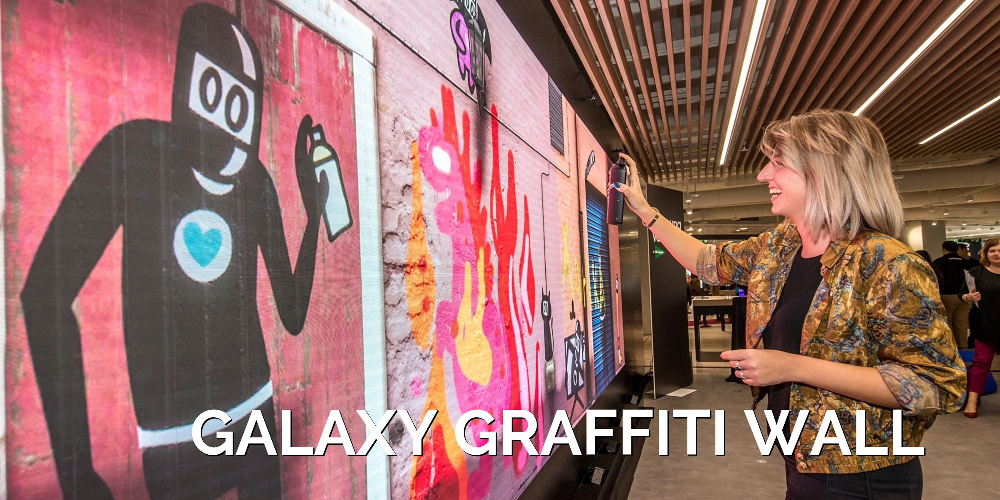
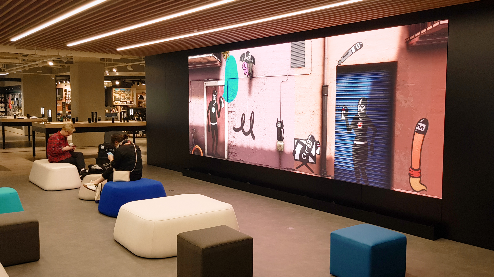
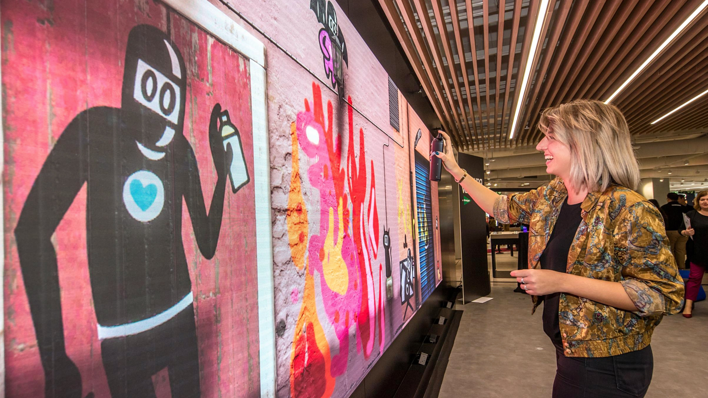
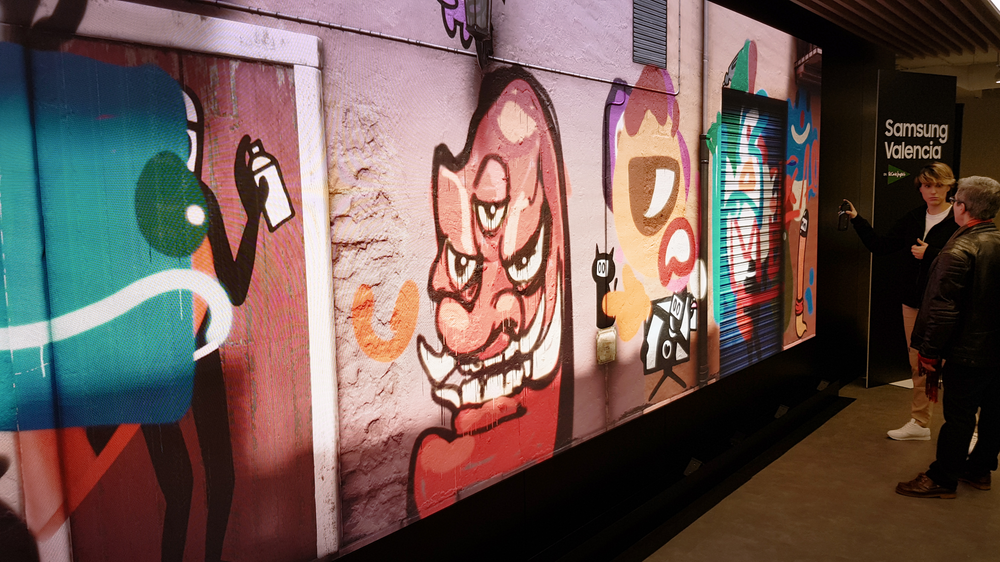
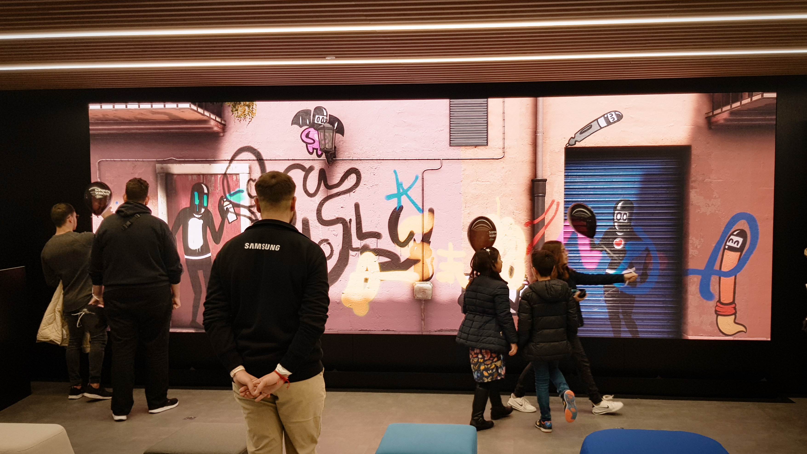
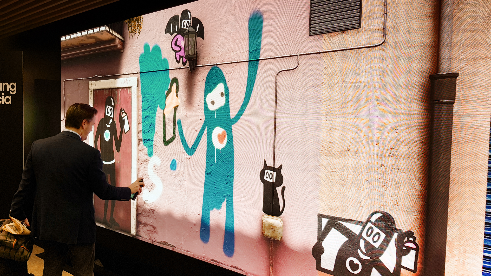
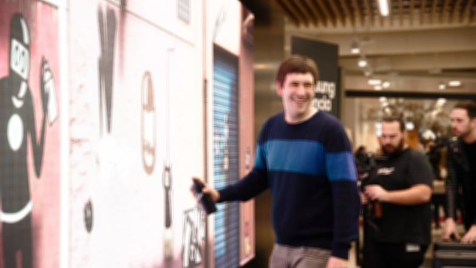

Digital Graffiti Wall
Samsung Valencia · Installation · 2021

A 6-meter interactive installation that lets an audience grab a digital spray can and paint on a shared wall, brandable, hands-on, and rebuilt-per-venue.





